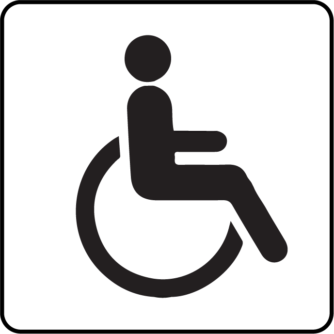

<div class="timeline">

    <div id="carbon">
        <h5>Durée totale: <label [ngStyle]="{color:'red'}">{{totalTime}}</label> mins | Empreinte carbone : <label [ngStyle]="{color:'green'}">{{carbon}}</label> g</h5>
    </div>
    
    <div *ngFor="let ele of trajet; index as i" [class]="ele.line" class="station" [ngClass]="prefix.concat(i.toString())" (mouseover)="sendStationChoice(i)" (mouseout)="sendStationChoice(-1)">
        <div class="time">{{ele.time | slice: 0:5}}</div>
        <div class="circle"></div>
        <div class="name">{{ele.name}}</div>
        @if(transitionIndex.includes(i)){

            
        }

        @if(transitionIndex.includes(i+1)){

            
        }

        @if (ele.accessible) {
            
        }

        @if(ele.culture){

            
        }
    </div>
